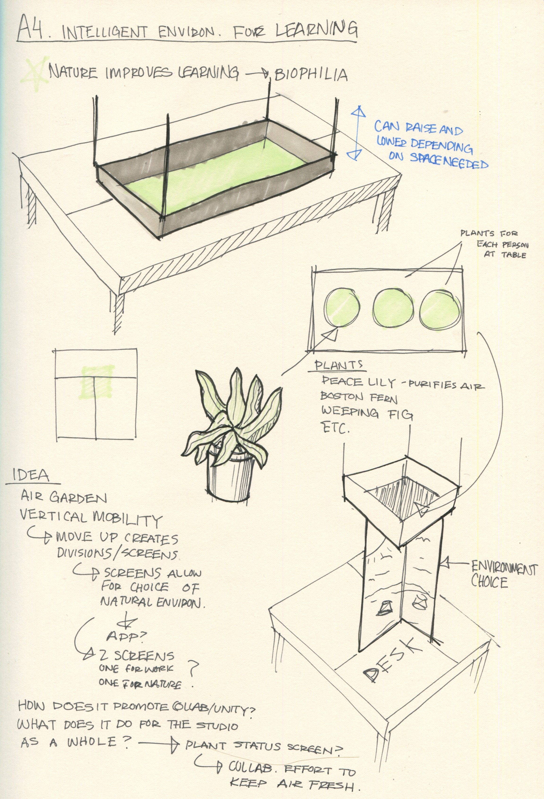
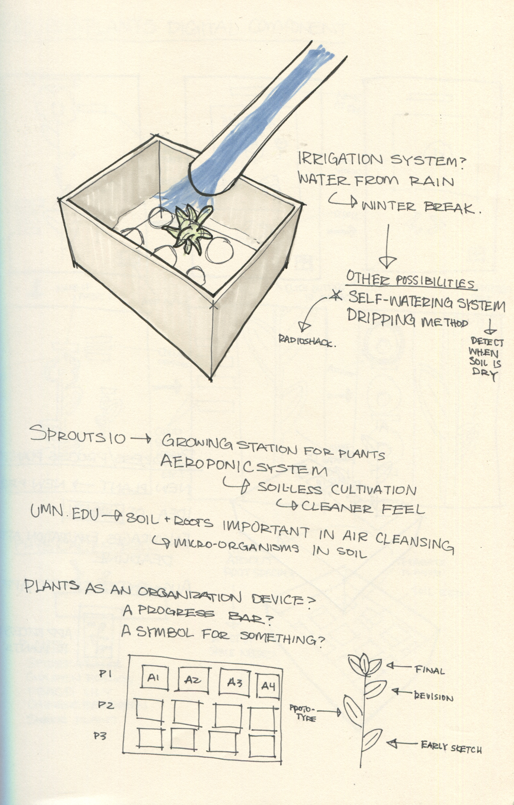

Overview
Tasked with changing the space where students work to a "studio of the future," I explored different ways to incorporate a more natural environment to the studio, shown through proof-of-concept videos.
Searching for Design Opportunities
In order to design a future studio space, I started off by looking at the problems of the present studio in search of design opportunities. Some of the things I listed included a stressful vibe, lack of wall space, lack of table space, and insufficient lighting for a comfortable environment. In the end, I decided to explore design solutions to improving the atmosphere in studio in order to reduce stress and make it a more enjoyable space for its inhabitants.
Initial Ideation (BioSpace)
In order to figure out how to fix the studio atmosphere, I turned to researching the "biophilia" phenomenon, which states that natural environments have been shown to lower stress and improve learning in a space. My initial idea involved having sensors in the room detect when stress levels get too high, and having the walls react accordingly to the high amounts of stress. They would change to simulate a natural environment, such as a beach, forest, or nighttime sky depending on the time of day.
Switching Gears
Some problems with the changing-walls idea was that it would be difficult to detect stress in a room, and not all students may appreciate or be able to work in a certain environment. Additionally, there's something ironic about having a digital simulation of a natural environment. As a result, I explored ways to create a natural atmosphere physically rather than digitally.
Exploring Different Ideas
I drew out some ways to bring physical plants into the studio space, including mobile air gardens that could be taken care for by each table cluster. Something I wanted to do with this redesign was to have each student take care of their own personal plant to make the plants seem more than just decorations. I also considered having an irrigation system for when students weren't around to take care of the plants, or in case they weren't motivated enough to water them.


Expanding on the Ideas
I looked at a few references to see how I could take the idea of interacting with a physical plant in a space further. I was interested in utilizing the growth of the plant to represent a person's own growth in knowledge and work over time in studio, thus strengthening the connection between the personal plant and its owner. I made some quick prototypes to show the concept of using augmented reality to "upload" a person's documents or photos into a part of the plant.


Taking a Step Back
After discussing my ideas with others, it was clear that having people upload work, which is usually a simple task, through a plant would be just too inconvenient and unnecessary. I took a step back and mapped out what my thought process to take me in a new directions, writing out what my goals and inspirations for this project were in the first place.

Plant Buddies Development
I looked into ways to make the interaction between the physical plants and the users more playful, using references such as Pokemon Go and Tamagotchi. I decided to make the plant entity itself more useful by creating a digital assistant that could act as a counterpart to the actual physical plant. I created a concept video to show how students would interact with the plants, and performed a live demo of me water the physical plant and having its digital counterpart reacting to being taken care of.